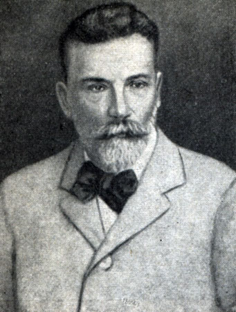

Вульф Юрий Викторович
Главная
Биография
Научные труды
Источники

Георгий (Юрий) Викторович Вульф (1863—1925) — российский учёный-кристаллограф, член-корреспондент Российской академии наук. Родился в украинском городе Нежине, Черниговской области.
Подготовил:
Бабичев Герман 10Б